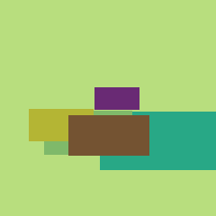

<body class="app-body theme-default layout-single-column"> <div class="app-holder" data-props='{"locale":"en"}' id="mastodon"> <div class="ui"> <div class="columns-area__panels"> <div class="columns-area__panels__main"> <div aria-label="Home" class="column" role="region"> <div class="column-header__wrapper"> <h1 class="column-header"><button class="column-header__title" type="button"><svg aria-hidden="true" class="icon icon-home" fill="currentColor" height="18" viewbox="0 -960 960 960" width="18"></svg>Home</button><div class="column-header__buttons"><button aria-label="Show settings" class="column-header__button" type="button"><svg aria-hidden="true" class="icon icon-tune" fill="currentColor" height="18" viewbox="0 -960 960 960" width="18"></svg></button></div></h1> </div> <div class="scrollable" role="feed"> <div class="item-list"><article class="status__wrapper agbilj" data-id="315138799448176933"> <div class="status status-public" data-id="315138799448176933"><div class="status__info t9102f"><a class="status__relative-time agbilj" href="https://mathstodon.xyz/@jonasreyeswrites/315138799448176933"><span class="status__visibility-icon"><svg aria-hidden="true" class="icon icon-globe" fill="currentColor" height="18" viewbox="0 -960 960 960" width="18"></svg></span><time>6h</time></a><a class="status__display-name t9102f" href="https://mathstodon.xyz/@jonasreyeswrites"><span class="display-name agbilj"><span class="display-name__account agbilj">@jonasreyeswrites@mathstodon.xyz</span><bdi class="t9102f"><strong class="display-name__html">Jonas</strong></bdi></span><div class="status__avatar t9102f"><div class="account__avatar"></div></div></a></div><div class="status__action-bar q3ulda"><button aria-label="Favorite" class="status__action-bar__button star-icon icon-button icon-button--with-counter j1xf1j" type="button"><svg aria-hidden="true" class="icon icon-star" fill="currentColor" height="18" viewbox="0 -960 960 960" width="18"></svg><span class="icon-button__counter"><span class="animated-number">2</span></span></button><button aria-label="More" class="status__action-bar__button status__action-bar__dropdown icon-button kvaq97" type="button"><svg aria-hidden="true" class="icon icon-more" fill="currentColor" height="18" viewbox="0 -960 960 960" width="18"></svg></button><button aria-label="Reply" class="status__action-bar__button icon-button icon-button--with-counter t9102f" type="button"><svg aria-hidden="true" class="icon icon-reply" fill="currentColor" height="18" viewbox="0 -960 960 960" width="18"></svg><span class="icon-button__counter"><span class="animated-number">3</span></span></button><button aria-label="Boost" class="status__action-bar__button icon-button icon-button--with-counter agbilj" type="button"><svg aria-hidden="true" class="icon icon-boost" fill="currentColor" height="18" viewbox="0 -960 960 960" width="18"></svg><span class="icon-button__counter"><span class="animated-number">1</span></span></button><button aria-label="Bookmark" class="status__action-bar__button status__action-bar__bookmark bookmark-icon icon-button q3ulda" type="button"><svg aria-hidden="true" class="icon icon-bookmark" fill="currentColor" height="18" viewbox="0 -960 960 960" width="18"></svg></button><div class="status__action-bar__spacer zouamz"></div></div><p class="status__content__spoiler agbilj"><span class="status__content__spoiler-text">politics</span><button class="status__content__spoiler-link" type="button">Show less</button></p><div class="status__content status__content--with-action j1xf1j" lang="en"><div class="status__content__text status__content__text--visible translate"><p>Took 94 photos at the farmers market and exactly one of them is in focus. Accidentally made enough banana bread for 9 people. Neighbours are getting some.</p></div></div></div> </article><article class="status__wrapper t9102f" data-id="740314293070997701"> <div class="status status-public status__wrapper-reblog" data-id="740314293070997701"><div class="status__prepend t9102f"><div class="status__prepend-icon-wrapper"><svg aria-hidden="true" class="icon status__prepend-icon icon-boost" fill="currentColor" height="18" viewbox="0 -960 960 960" width="18"></svg></div><span><a class="status__display-name muted" href="#"><bdi><strong>Amara Lind ☕</strong></bdi></a> boosted</span></div><div class="status__content status__content--with-action j1xf1j" lang="en"><div class="status__content__text status__content__text--visible translate"><p>Our tiny team shipped release 3.16 after 24 days of testing. If anyone has a good dumplings recipe that does not need a stand mixer, please share. Small win: fixed a bug that has been haunting me for 90 weeks. Finally finished repotting 63 tomato seedlings on my balcony.</p></div></div><button class="status__content__read-more-button q3ulda" type="button">Read more<svg aria-hidden="true" class="icon icon-chevron" fill="currentColor" height="18" viewbox="0 -960 960 960" width="18"></svg></button><div class="status__action-bar zouamz"><div class="status__action-bar__spacer zouamz"></div><button aria-label="Reply" class="status__action-bar__button icon-button icon-button--with-counter t9102f" type="button"><svg aria-hidden="true" class="icon icon-reply" fill="currentColor" height="18" viewbox="0 -960 960 960" width="18"></svg><span class="icon-button__counter"><span class="animated-number">47</span></span></button><button aria-label="Favorite" class="status__action-bar__button star-icon icon-button icon-button--with-counter j1xf1j" type="button"><svg aria-hidden="true" class="icon icon-star" fill="currentColor" height="18" viewbox="0 -960 960 960" width="18"></svg><span class="icon-button__counter"><span class="animated-number">4</span></span></button><button aria-label="More" class="status__action-bar__button status__action-bar__dropdown icon-button kvaq97" type="button"><svg aria-hidden="true" class="icon icon-more" fill="currentColor" height="18" viewbox="0 -960 960 960" width="18"></svg></button><button aria-label="Bookmark" class="status__action-bar__button status__action-bar__bookmark bookmark-icon icon-button q3ulda" type="button"><svg aria-hidden="true" class="icon icon-bookmark" fill="currentColor" height="18" viewbox="0 -960 960 960" width="18"></svg></button><button aria-label="Boost" class="status__action-bar__button icon-button icon-button--with-counter agbilj" type="button"><svg aria-hidden="true" class="icon icon-boost" fill="currentColor" height="18" viewbox="0 -960 960 960" width="18"></svg><span class="icon-button__counter"><span class="animated-number">3</span></span></button></div><div class="status__info agbilj"><a class="status__relative-time agbilj" href="https://fosstodon.org/@imani/740314293070997701"><span class="status__visibility-icon"><svg aria-hidden="true" class="icon icon-globe" fill="currentColor" height="18" viewbox="0 -960 960 960" width="18"></svg></span><time>1h</time></a><a class="status__display-name t9102f" href="https://fosstodon.org/@imani"><span class="display-name agbilj"><span class="display-name__account agbilj">@imani@fosstodon.org</span><bdi class="t9102f"><strong class="display-name__html">Imani Iyer 📷</strong></bdi></span><div class="status__avatar t9102f"><div class="account__avatar"></div></div></a></div></div> </article><article class="status__wrapper j1xf1j" data-id="147162008607339270"> <div class="status status-public" data-id="147162008607339270"><div class="status__action-bar q3ulda"><button aria-label="Bookmark" class="status__action-bar__button status__action-bar__bookmark bookmark-icon icon-button q3ulda" type="button"><svg aria-hidden="true" class="icon icon-bookmark" fill="currentColor" height="18" viewbox="0 -960 960 960" width="18"></svg></button><button aria-label="Boost" class="status__action-bar__button icon-button icon-button--with-counter agbilj" type="button"><svg aria-hidden="true" class="icon icon-boost" fill="currentColor" height="18" viewbox="0 -960 960 960" width="18"></svg><span class="icon-button__counter"><span class="animated-number">2</span></span></button><div class="status__action-bar__spacer zouamz"></div><button aria-label="More" class="status__action-bar__button status__action-bar__dropdown icon-button kvaq97" type="button"><svg aria-hidden="true" class="icon icon-more" fill="currentColor" height="18" viewbox="0 -960 960 960" width="18"></svg></button><button aria-label="Favorite" class="status__action-bar__button star-icon icon-button icon-button--with-counter j1xf1j" type="button"><svg aria-hidden="true" class="icon icon-star" fill="currentColor" height="18" viewbox="0 -960 960 960" width="18"></svg><span class="icon-button__counter"><span class="animated-number">1</span></span></button><button aria-label="Reply" class="status__action-bar__button icon-button icon-button--with-counter t9102f" type="button"><svg aria-hidden="true" class="icon icon-reply" fill="currentColor" height="18" viewbox="0 -960 960 960" width="18"></svg><span class="icon-button__counter"><span class="animated-number">1</span></span></button></div><div class="status__content status__content--with-action agbilj" lang="en"><div class="status__content__text status__content__text--visible translate"><p>Wrote up my notes: <a href="https://codecraft.io/2026/6858" rel="nofollow noopener" target="_blank">https://codecraft.io/2026/6858</a> Spent the whole morning at the train station and saw 16 herons. Sketched our community garden during lunch, still learning how to draw bicycles.</p></div></div><a class="status-card j1xf1j" href="https://codecraft.io/2026/6858" rel="noopener" target="_blank"><div class="status-card__image"></div><div class="status-card__content"><span class="status-card__host"><span lang="en">codecraft.io</span></span><strong class="status-card__title">How Godot quietly became the default choice</strong><span class="status-card__description">Short read, about five minutes.</span></div></a><div class="status__info t9102f"><a class="status__relative-time agbilj" href="https://hachyderm.io/@mnielsenhq/147162008607339270"><span class="status__visibility-icon"><svg aria-hidden="true" class="icon icon-globe" fill="currentColor" height="18" viewbox="0 -960 960 960" width="18"></svg></span><time>9h</time></a><a class="status__display-name t9102f" href="https://hachyderm.io/@mnielsenhq"><span class="display-name agbilj"><span class="display-name__account agbilj">@mnielsenhq@hachyderm.io</span><bdi class="t9102f"><strong class="display-name__html">Mateo 🌱</strong></bdi></span><div class="status__avatar t9102f"><div class="account__avatar"></div></div></a></div></div> </article></div> </div> </div> </div> <div class="columns-area__panels__pane columns-area__panels__pane--navigational"> <div class="navigation-panel"> <div class="navigation-panel__logo"><span class="logo-mark">m</span><span>mastodon</span></div> <input aria-label="Search" class="search__input" placeholder="Search or paste URL" style="" type="text"/> <a class="column-link column-link--transparent column-link--active" href="#"><svg aria-hidden="true" class="icon icon-home" fill="currentColor" height="18" viewbox="0 -960 960 960" width="18"></svg><span>Home</span></a> <a class="column-link column-link--transparent" href="#"><svg aria-hidden="true" class="icon icon-explore" fill="currentColor" height="18" viewbox="0 -960 960 960" width="18"></svg><span>Explore</span></a> <a class="column-link column-link--transparent" href="#"><svg aria-hidden="true" class="icon icon-globe" fill="currentColor" height="18" viewbox="0 -960 960 960" width="18"></svg><span>Live feeds</span></a> <a class="column-link column-link--transparent" href="#"><svg aria-hidden="true" class="icon icon-bell" fill="currentColor" height="18" viewbox="0 -960 960 960" width="18"></svg><span>Notifications</span></a> <a class="column-link column-link--transparent" href="#"><svg aria-hidden="true" class="icon icon-mail" fill="currentColor" height="18" viewbox="0 -960 960 960" width="18"></svg><span>Private mentions</span></a> <a class="column-link column-link--transparent" href="#"><svg aria-hidden="true" class="icon icon-bookmark" fill="currentColor" height="18" viewbox="0 -960 960 960" width="18"></svg><span>Bookmarks</span></a> <a class="column-link column-link--transparent" href="#"><svg aria-hidden="true" class="icon icon-star" fill="currentColor" height="18" viewbox="0 -960 960 960" width="18"></svg><span>Favorites</span></a> <a class="column-link column-link--transparent" href="#"><svg aria-hidden="true" class="icon icon-list" fill="currentColor" height="18" viewbox="0 -960 960 960" width="18"></svg><span>Lists</span></a> <hr/> <a class="column-link column-link--transparent" href="#"><svg aria-hidden="true" class="icon icon-gear" fill="currentColor" height="18" viewbox="0 -960 960 960" width="18"></svg><span>Preferences</span></a> <a class="navigation-panel__compose" href="#">New post</a> </div> </div> </div> </div> </div> </body>